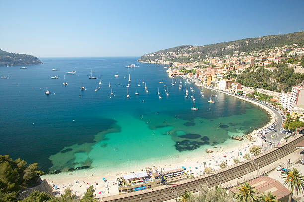
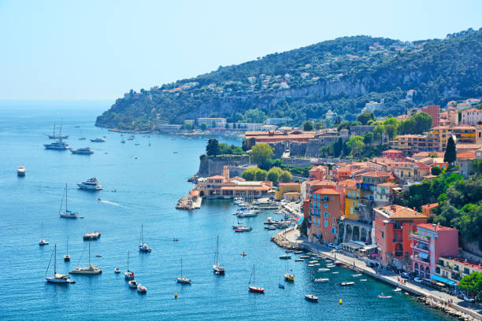
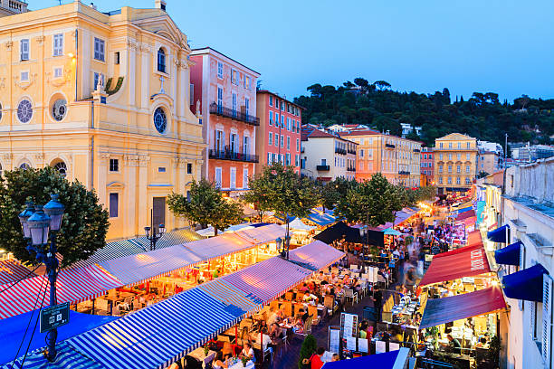
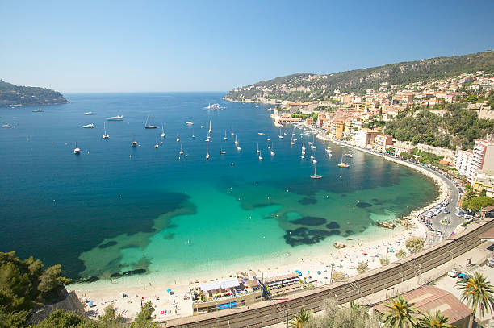

|
 | Foto de stock de Promenade d'Anglais, Nice, Cote d'Azur, France Um famoso passeio ao longo da praia do Mediterrâneo em Nice, França |
Foto de stock de França, Nice, mar e praia mediterrâneo. |
|  |  | Foto de estoque de Villefranche-sur-Mer na Riviera Francesa. A cidade de Villefranche-sur-Mer, na Riviera Francesa, cerca de 8 km a leste de Nice, França |
Foto de stock de Cours Saleya, Nice Restaurantes ao ar livre em Cours Saleya, Old Town, Nice, Cote D'Azur, França |
|
 | Foto de stock de Promenade d'Anglais, Nice, Cote d'Azur, France Um famoso passeio ao longo da praia do Mediterrâneo em Nice, França |
Foto de stock de França, Nice, mar e praia mediterrâneo. |
Pontos Turísticos em Nice |
Como é viver em Nice e sua economia |
| Link da pág 02 | Link da pág 03 |